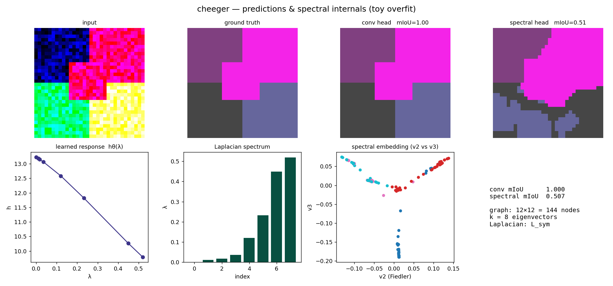
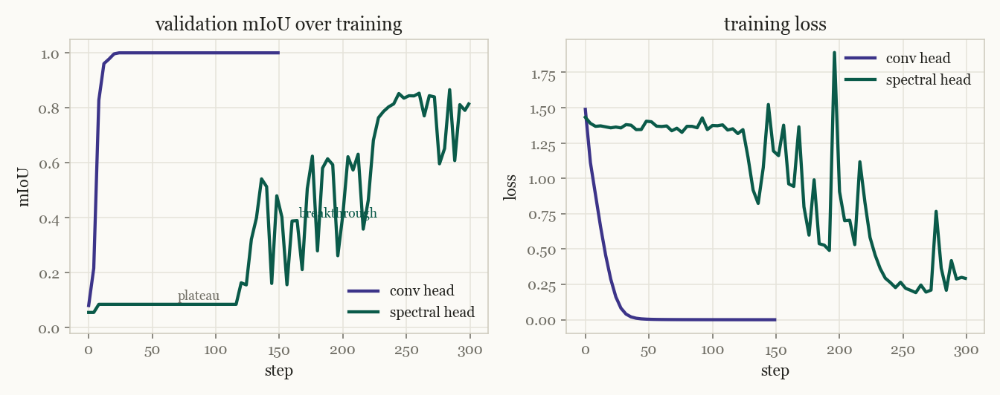
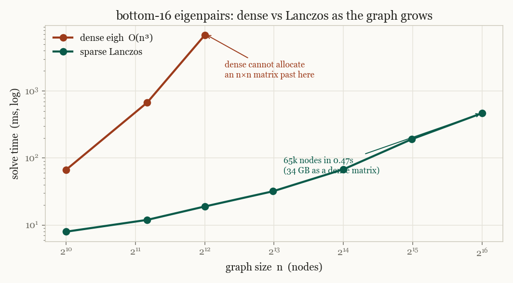

01 — our workWhat we are building
A segmentation model usually ends with a small convolution that labels each pixel on its own. It has no built in sense of which pixels belong together. cheeger replaces that final step with something that reasons about the whole image at once. It treats the network's feature map as a graph, where every pixel is a node and edges connect pixels that look alike, and it segments the image by finding good cuts in that graph. The tool for finding those cuts is spectral graph theory. The entire path is differentiable, so it trains end to end as a head on a U-Net.
So the contribution is not a new backbone or a bigger model. It is a different way of building the segmentation representation itself. Classical spectral clustering fixes the graph and reads off its eigenvectors. We let the network learn the graph, learn how to weight the spectrum, and learn it all against real labels. The sections below build up to why that matters, starting from the groundwork.
02 — groundworkWhat you need first
To see why a learned spectrum is the right idea, three things have to be on the table. What a graph Laplacian is. What its eigenvectors tell you about the graph. And how people already use those eigenvectors to segment images. Once those are clear, the gap we are filling becomes obvious, and so does our way of filling it.
03 — backgroundSpectral graph theory, briefly
A graph is a set of nodes joined by weighted edges. Two matrices describe it. The adjacency \(W\), where \(W_{ij}\) is the weight of the edge between nodes \(i\) and \(j\), and the degree \(D\), a diagonal matrix holding each node's total edge weight. From these comes the object the whole field rests on, the graph Laplacian.
$$ L = D - W, \qquad L_{\text{sym}} = I - D^{-1/2} W D^{-1/2}. $$The Laplacian looks plain but its eigenvectors carry the global shape of the graph. A few facts make this concrete. The smallest eigenvalue is always zero. The number of zero eigenvalues equals the number of connected pieces. And as you climb from the small eigenvalues to the large ones, the eigenvectors go from smooth functions that barely change across edges to rough functions that flip sign constantly. In other words the Laplacian gives you a notion of frequency on a graph. Low eigenvalues are low frequency, and low frequency is where the large scale structure lives.
That last point is the one to hold onto. If an image has a few coherent regions, the graph built from it has a few low frequency modes, and those modes are exactly the regions. Reading the segmentation off the bottom of the spectrum is the whole game.
04 — backgroundThe Fiedler vector
The second smallest eigenvalue \(\lambda_2\) has a name, the algebraic connectivity. It measures how hard the graph is to cut in two. Its eigenvector, the Fiedler vector, assigns a single number to every node, and the sign of that number tells you which side of the best cut the node sits on. Threshold one eigenvector at zero and the graph falls into two natural pieces along its weakest seam.
This is the cleanest bridge between linear algebra and clustering. And it is where the project gets its name. Cheeger's inequality bounds the quality of the best possible cut, the Cheeger constant, by the Fiedler value \(\lambda_2\). Segmentation is cutting. The spectrum tells you where to cut.
05 — the normFrom partitioning to segmentation
Two pieces is one eigenvector. For more pieces you take the bottom \(k\) eigenvectors together and treat them as coordinates. Each node becomes a point in a \(k\) dimensional spectral embedding, similar nodes land near each other, and a simple clustering step recovers the regions. This is spectral clustering, and it is the standard recipe.
For images the classic version is Shi and Malik's normalized cuts from 2000.[3] Pixels are nodes, edges measure brightness and proximity, and the bottom eigenvectors of the normalized Laplacian give the segments. The modern version swaps hand designed pixel similarity for deep features. Build the graph from a vision transformer's patch features, as in the DINO line of work,[15] and the bottom eigenvectors fall out as clean object masks with no labels at all. Deep spectral methods make this explicit as a segmentation baseline.[16]
Strip away the details and every one of these methods does the same four steps. Fix an affinity kernel on the features. Form the normalized Laplacian. Take the bottom \(k\) eigenvectors. Cluster. It works, and it is a strong baseline. It is also where the cracks show.
06 — the gapWhere the standard recipe falls short
Four limitations, and each one points straight at a design choice we make differently.
The graph is fixed. The affinity kernel, usually a Gaussian with a bandwidth \(\sigma\) chosen by hand, decides what counts as similar. It is set once and never adapts to the task.
The spectral weighting is ad hoc. Once you have the eigenvectors, how do you weight them. Keep the first \(K\) and drop the rest. Raise the eigenvalues to some power. Every method picks a fixed rule, and none of them learns it.
The noise floor is a guess. Somewhere in the spectrum signal ends and noise begins. The usual answer is a heuristic, for instance treat the last ten percent of eigenvalues as noise. That number is not measured, it is assumed.
It does not train, and it does not scale. Backpropagating through an eigendecomposition multiplies gradients by \(1/(\lambda_i - \lambda_j)\). When two eigenvalues come close, which is exactly what happens at a segment boundary, that term explodes. And a dense eigendecomposition costs \(O(n^3)\). A modest \(64\times 64\) feature map is already 4096 nodes, where one solve takes several seconds.
07 — our noveltyOne operator behind all of it
Start from an observation that ties the prior work together. Tempering the eigenvalues, truncating at \(K\), pruning channels, weighting wavelet bands. These look like different tricks, but they are the same operation. Each one applies a function \(h(\lambda)\) to the eigenbasis of a graph operator. They differ only in which fixed \(h\) they happen to pick.
If every method is a fixed choice of \(h(\lambda)\), then the natural move is to stop choosing and start learning. Make \(h_\theta(\lambda)\) a small network on the eigenvalues, and train it against the labels.
The embedding becomes \(\Phi = U \,\mathrm{diag}\big(h_\theta(\lambda)\big)\), where \(U\) holds the bottom eigenvectors and \(h_\theta\) decides how much each one matters. The network learns the spectral representation that helps segmentation, rather than inheriting one from a paper. Three more pieces make this real.
A differentiable eigensolver that survives degeneracy
The exploding \(1/(\lambda_i - \lambda_j)\) is the thing that stops people training through the spectrum. We replace it with a broadened version that stays finite when eigenvalues collide. It behaves like the true gradient when eigenvalues are well separated and saturates smoothly when they are not. This is what keeps training stable at boundaries, which is the one place segmentation cares about most.
A noise floor from first principles
Instead of guessing where noise starts, we read it from random matrix theory. The Marchenko Pastur law gives the exact edge of the spectrum that pure noise can produce for a random feature matrix. We regularize \(h_\theta\) to fall to zero below that edge. The arbitrary ten percent becomes an actual estimate.
A graph the network designs
The affinity is learned too. A metric on the feature channels and a learnable bandwidth let the network decide what makes two pixels similar, jointly with everything else. And a loss closes the loop, a Rayleigh quotient consistency term that rewards predictions which respect the graph, a smoothness prior without the cost of a separate refinement stage.
08 — our workWhat differentiable spectral theory means
Spectral graph theory is old and settled. The part that is new, and that the whole project leans on, is making it differentiable. The idea is to treat the eigendecomposition itself as a layer. Features go in, eigenvectors come out, and a gradient travels back through the solve to tell the earlier layers how to reshape the graph. The spectrum stops being a fixed preprocessing step and becomes something the network trains.
This is routine until you write the gradient down. First order perturbation theory says that when the matrix \(A = U\Lambda U^\top\) changes by \(dA\), each eigenvector moves by a sum over all the others, weighted by the inverse gap between eigenvalues.
$$ du_i = \sum_{j \neq i} \frac{u_j^\top (dA)\, u_i}{\lambda_i - \lambda_j}\; u_j $$The \(1/(\lambda_i - \lambda_j)\) is the whole problem. When two eigenvalues approach each other the gradient diverges. In segmentation this is not a rare edge case, it is the common case. Eigenvalues crowd together exactly where regions meet, so the gradient blows up at the boundaries the model most needs to learn. This one term is why most segmentation work treats eigenvectors as a fixed, precomputed input and never trains through them.[13][14]
Differentiable spectral theory, as we use the phrase, is the set of choices that make this gradient usable. A backward pass that stays finite under degeneracy. A forward pass that computes only the few eigenvectors you need so it scales. And a spectral filter the gradient can actually shape. The next section writes these out, and flags the pieces that are not standard in segmentation.
09 — our workThe mathematical grounding
Here is the model written out. We build a learned affinity between feature vectors \(f_i\), using a metric \(M\) and a bandwidth \(\sigma\) that are both learned.
$$ W_{ij} = \exp\!\left(-\,\frac{(f_i - f_j)^\top M (f_i - f_j)}{2\sigma^2}\right) $$From it we form the symmetric normalized Laplacian, whose spectrum sits in \([0,2]\) and which is symmetric and positive semidefinite, the right object for a stable solver.
$$ L_{\text{sym}} = I - D^{-1/2} W D^{-1/2} $$We solve for the bottom \(k\) eigenpairs \((\lambda, U)\). The forward pass uses Lanczos so it scales. The backward pass is where the degeneracy fix lives. Given upstream gradients on the eigenvalues and eigenvectors, the gradient with respect to the matrix is
$$ \bar A = U\Big(\mathrm{diag}(\bar g_\lambda) + F \circ (U^\top \bar g_U)\Big)U^\top, \qquad F_{ij} = \frac{\lambda_j - \lambda_i}{(\lambda_j - \lambda_i)^2 + \varepsilon^2}. $$The \(\varepsilon\) is the broadening. As \(\varepsilon \to 0\) this is the exact eigenvector gradient. For \(\varepsilon > 0\) the term stays bounded by \(1/2\varepsilon\) even when the gap closes. The embedding then weights the eigenvectors with the learned response, and the noise edge comes from the aspect ratio of the feature matrix.
$$ \Phi = U\,\mathrm{diag}\big(h_\theta(\lambda)\big), \qquad \lambda_{+} = \sigma^2\Big(1 + \sqrt{d/n}\,\Big)^2 $$Training combines the usual pixel loss with two spectral terms. A Rayleigh quotient that measures how rough the prediction is on the graph, and a penalty that pushes the learned response to zero inside the noise bulk.
$$ \mathcal{L} = \mathcal{L}_{\text{CE}} \;+\; \alpha \cdot \frac{1}{K}\sum_c \frac{p_c^\top L\, p_c}{p_c^\top p_c} \;+\; \beta \cdot \text{bulk}(h_\theta,\lambda) $$The equations that are not standard in segmentation
Most of the pieces above are textbook. A few are not, at least not in this field. These are the ones doing the real work, borrowed from random matrix theory, numerical linear algebra and graph signal processing rather than from the segmentation literature.
10 — our workArchitecture and the choices behind it
A swappable head. We keep a single U-Net backbone and put the head behind a clean interface. One head is a plain convolution, the baseline. The other is our spectral head. Same backbone, two heads, so any difference in the numbers is attributable to the head and nothing else. That control is the point of the whole setup.
The graph lives at low resolution. Building the graph is the expensive part, so we build it on a downsampled feature map and upsample the logits back to full size. A pixel grid at full resolution is hundreds of thousands of nodes. At the bottleneck it is a few thousand, which is tractable and still carries the structure that matters.
From scratch, but in the right framework. Every spectral operator, the affinity, the Laplacians, both eigensolvers, the backward pass, is written from first principles. We use PyTorch because the head has to live inside automatic differentiation and run on a GPU, but scipy and numpy appear only as oracles in the tests, never in the forward path. The math is ours, the plumbing is borrowed where borrowing is the sensible call.
Lanczos for scale. A dense eigendecomposition is cubic and out of the question past a few thousand nodes. We wrote a from scratch Lanczos solver that returns only the bottom few eigenvectors through matrix vector products, so a sparse graph makes the solve close to linear. It matches the dense answer to machine precision and runs at sixty five thousand nodes in under half a second, where a dense matrix would need thirty four gigabytes just to exist.
A training detail worth recording. The consistency loss has to be warmed up. At the start of training the graph is nearly uniform, so a smooth prediction is the same as a uniform one, and the loss happily pins the model to a blank answer. Switch it on only after the features organize and it helps instead of hurts. Small lesson, real consequence.

11 — experimentsWhat we have measured
The system runs and the pieces have been exercised. Two results stand in for the rest. A controlled comparison of the two heads on a single scene, the kind of thing the live dashboard shows during training, and the scaling behaviour of the eigensolver, which decides whether any of this is usable at real resolution.

The two heads behave very differently, and the difference is the interesting part. The convolution labels each pixel on its own, so it fits immediately. The spectral head has to earn its representation. At the start the graph is nearly uniform and the bottom eigenvectors carry no usable signal, so the loss barely moves. Once the backbone organizes its features the graph clusters, the eigenvectors snap into place, and the model breaks through. It has to build the structure before it can use it. This is also why the consistency loss is warmed up rather than switched on at step zero.

The scaling result is what makes the spectral head practical rather than a toy. A dense decomposition cannot even allocate its matrix past a few thousand nodes. Lanczos returns the same bottom eigenvectors, to fifteen digits, in a small fraction of the time, at sizes the dense solve cannot reach. Everything on this page runs locally on a laptop with no GPU. A live version of these curves streams to a dashboard while training, and the full picture of predictions and spectral internals together is in the snapshot above.
12 — where we areProgress and what is left
The mathematical core is built and verified, the model runs, and the scale problem is solved. What remains is the data pipeline and the experiment that turns this from a working system into a result.
The plan from here is deliberately staged. Prove the head learns on a single image locally, which it already does. Run a small Cityscapes loop on a free cloud GPU to shake out the training pipeline. Then the full benchmark on a rented GPU, three seeds, a paired test against the convolution baseline, and the one question the whole project is built to answer. When a network is free to choose how to weight a graph spectrum for segmentation, does it rediscover the structure that random matrix theory predicts, or does it find something better.
That is the experiment we are walking toward. The groundwork underneath it is done.
sourcesReferences
The classical foundations, and the threads we pull from outside segmentation.
- M. Fiedler. Algebraic connectivity of graphs. Czechoslovak Mathematical Journal, 1973.
- J. Cheeger. A lower bound for the smallest eigenvalue of the Laplacian. Problems in Analysis, 1970.
- J. Shi and J. Malik. Normalized cuts and image segmentation. IEEE TPAMI, 2000.
- A. Ng, M. Jordan, Y. Weiss. On spectral clustering: analysis and an algorithm. NeurIPS, 2002.
- U. von Luxburg. A tutorial on spectral clustering. Statistics and Computing, 2007.
- M. Belkin and P. Niyogi. Laplacian eigenmaps for dimensionality reduction and data representation. Neural Computation, 2003.
- R. Coifman and S. Lafon. Diffusion maps. Applied and Computational Harmonic Analysis, 2006.
- C. Lanczos. An iteration method for the solution of the eigenvalue problem of linear differential and integral operators. J. Research NBS, 1950.
- V. Marchenko and L. Pastur. Distribution of eigenvalues for some sets of random matrices. Mathematics of the USSR Sbornik, 1967.
- J. Baik, G. Ben Arous, S. Péché. Phase transition of the largest eigenvalue for non-null complex sample covariance matrices. Annals of Probability, 2005.
- J. Bruna, W. Zaremba, A. Szlam, Y. LeCun. Spectral networks and locally connected networks on graphs. ICLR, 2014.
- M. Defferrard, X. Bresson, P. Vandergheynst. Convolutional neural networks on graphs with fast localized spectral filtering. NeurIPS, 2016.
- C. Ionescu, O. Vantzos, C. Sminchisescu. Matrix backpropagation for deep networks with structured layers. ICCV, 2015.
- W. Wang, Z. Dang, Y. Hu, P. Fua, M. Salzmann. Backpropagation-friendly eigendecomposition. NeurIPS, 2019.
- M. Caron et al. Emerging properties in self-supervised vision transformers (DINO). ICCV, 2021.
- L. Melas-Kyriazi, C. Rupprecht, A. Vedaldi. Deep spectral methods: a surprisingly strong baseline for unsupervised semantic segmentation. CVPR, 2022.
- M. Berman, A. Triki, M. Blaschko. The Lovász-Softmax loss: a tractable surrogate for the optimization of the IoU measure. CVPR, 2018.
- B. Cheng, R. Girshick, P. Dollár, A. Berg, A. Kirillov. Boundary IoU: improving object-centric image segmentation evaluation. CVPR, 2021.